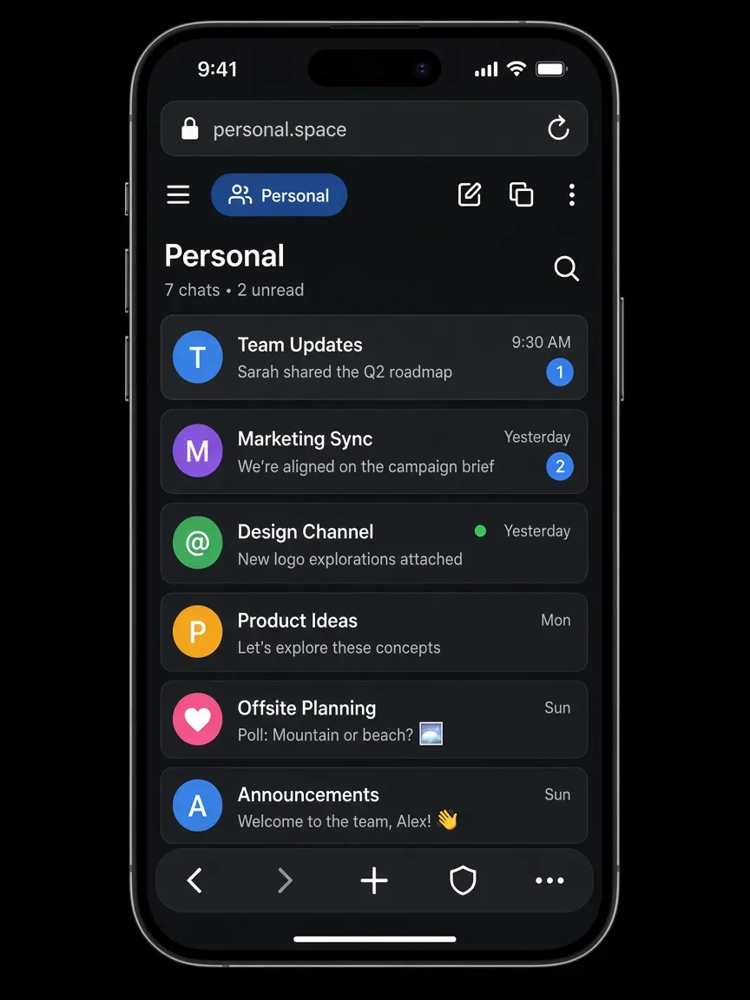

Guide · iPhone
Multiple accounts browser — isolated Spaces instead of logging out
XBrowser lets you keep several logins open at once. Each Space is a persistent sandbox with its own cookies, cache, history, and bookmarks. Switch Spaces instead of logging out — WhatsApp Web, social, shopping, and work stay apart.

Why log out / log in is a poor fit
Most browsers give you one cookie jar. Sign into a second WhatsApp Web, Instagram, or store account and the first session is overwritten or mixed. Workarounds people try:
- Log out every time you switch (slow, easy to mess up)
- Incognito for the second account (session dies when you close it)
- A second browser or phone (clunky on iPhone)
A multiple accounts browser that uses lasting, isolated sessions solves this without those tradeoffs.
How Spaces differ from Incognito and fingerprint browsers
Spaces vs Incognito / Private mode
Incognito is temporary: close the window and the session is gone. A Space keeps its own WebKit data store until you clear or remove it. You stay signed in across days, per Space.
Spaces vs “just another tab”
Tabs in one profile share cookies. Spaces do not. Account A in Space 1 cannot see Account B’s cookies in Space 2.
What Spaces are not
XBrowser is not an antidetect browser and does not spoof fingerprints. It does not change your IP. Isolation here means separate local data stores for cookies, cache, history, and bookmarks — so multiple logins do not mix on the device. Under the hood: Apple’s WKWebsiteDataStore per Space.
Dual WhatsApp Web, social, and shopping
WhatsApp Web (and similar)
Open personal WhatsApp Web in one Space and work or a second number’s Web session in another. Each Space keeps its own cookies, so you do not scan a QR code into the wrong account by accident. Guides: two WhatsApp accounts, dual WhatsApp Web.
Social accounts
Keep creator, brand, and personal social logins in separate Spaces. Switch Spaces instead of juggling log out / log in. See multiple Instagram accounts and social use cases.
Shopping and marketplaces
Use one Space for a personal store account and another for work purchasing or a second marketplace login, with bookmarks and history kept apart. See ecommerce use cases.
Split View
Open two Spaces side by side when you need to compare carts, chats, or dashboards. Split View →

Free vs Premium Spaces
| Free | Premium | |
|---|---|---|
| Number of Spaces | Up to 3 | Unlimited |
| Isolated cookies / cache / history / bookmarks | Yes | Yes |
| Space Lock (PIN / pattern / Face ID / Touch ID) | — | Yes |
| Split View, built-in player, Second Lock | Included in the app | Included in the app |
Start free with three Spaces for personal + work + one extra. Upgrade when you need more Spaces or locked Spaces on a shared iPhone. Pricing →
Honest limits
- XBrowser does not change your IP address
- It does not claim anonymity
- It is not antidetect software and does not spoof browser fingerprints
Spaces separate sessions on your device. Sites you visit still see a normal browser connection. If you need a different network path, use a VPN separately.
For iPhone privacy features (tracker blocking, Space Lock detail), see the privacy browser for iPhone page.
FAQ
Can I run multiple accounts in one browser with XBrowser?
Yes. Create a Space per account. Each Space has separate cookies, cache, history, and bookmarks, so sessions do not mix.
Does this work for dual WhatsApp Web?
Yes. Put each WhatsApp Web login in its own Space. They stay signed in separately because cookies are isolated per Space.
How is this different from Incognito?
Incognito sessions are temporary. Spaces are persistent sandboxes: you can reopen the same Space later and still be signed in, without sharing cookies with other Spaces.
Is there a free plan for multiple accounts?
Yes. Free includes up to 3 Spaces. Premium unlocks unlimited Spaces and Space Lock.
Does XBrowser hide my identity or change my IP?
No. It does not change IP, claim anonymity, or spoof fingerprints. It isolates local browsing data so multiple logins stay separate.
Get started
Install XBrowser and create a Space for each account you need open. Use Split View when two Spaces help side by side. Add Space Lock on Premium if the phone is shared.